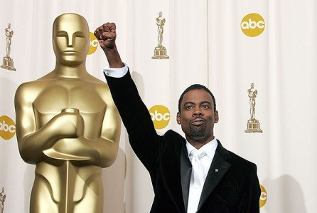

Michael is the author of Staying Married in a Degenerate Age. Follow him on Twitter or Facebook. You can read more of his writing at Honor and Daring.


Social justice warriors have succeeded in ruining the entire movie industry. If you needed any proof, you just had to tune in to the 2016 Academy Awards ceremony.
I’m not sure when it happened, but at some point the Academy Awards went from being a celebration of the film industry to an opportunity to sanctimoniously lecture the American people on various social justice issues. The Oscars have a small set of recurring SJW hot buttons: white racism against blacks, the plight of gays or the gender confused, the plight of women, the plight of immigrants, the Holocaust, and global warming. This year I watched to ensure that all the SJW boxes were checked.

This year was really embarrassing for the Academy of Motion Picture Arts and Sciences—they did not nominate any black actors. Spike Lee and Will Smith protested it as being racist and boycotted the ceremony. SJW heads exploded.
Now, it strikes me as odd that there must be some sort of quota for blacks being nominated. Why just have a quota for blacks? Why not also have a quota for Chinese and Indian actors? But consistency is not a strong suit of SJWs.
To repair the damage done by its failure to nominate blacks, the Academy turned the entire Oscar ceremony into one long rant on racism. It started with host Chris Rock’s monologue. He opened with a joke about blacks not being nominated. I thought he would leave it at that, but he pressed on. His entire monologue was about the Academy’s faux pas.
To his credit, Rock did needle the Academy a bit, as well as Will Smith, but then it turned into an attack on white Americans in general. Rock said the reason that blacks didn’t protest the Oscars in previous years was because they had real problems to deal with. According to Rock, blacks in the past were constantly being raped and their grandmothers were hung from trees. Even today, Rock said, blacks have a problem getting to a movie theatre without being shot by the police.
This set the pace for the rest of the night. The heat was off the Academy. The real culprit is white Americans and their racist attitudes. The browbeating continued throughout the rest of the evening. Rock came back to the theme of racism again and again. The Academy made sure a disproportionately large number of the presenters were black. Finally, the evening closed to Public Enemy’s Fight the Power.
White racism against blacks box checked. And checked. And checked.

Just as I was beginning to think that the entire Oscar ceremony would be dedicated to white racism, the Academy threw me a curveball by having Vice President Joe Biden show up on stage. Sitting politicians have no business showing up on popular television shows, but the Obama Administration has made this sort of appearance mandatory. Somehow I doubt that this will continue if the next president is a Republican.
At first, I thought Biden was going to continue chastising me for being white. Instead, he started talking about the evils of campus sexual assaults. Now, Biden is a very strange person to introduce a segment on nonconsensual sex. Judging by the photos below, he is an intensely creepy man who appears to have a serious problem with the unwelcome touching of women.


Biden urged his listeners to take a pledge to “intervene in situations when consent has not or cannot be given.” But who will intervene to prevent Biden from inappropriately touching women, young and old? After saying a few words about the concocted campus assault epidemic, Pervy-Toucher-in-Chief Biden introduced Lady Gaga who sang a song about sexual assault.
The song was entitled Til It Happens to You, but I can’t tell you what the lyrics were. It was so awful that I had to mute the sound until it was over. At the end of the song, a bunch of sexual assault victims walked out on stage. Each victim had an empowering word like, “survivor,” “unbreakable,” or “Hillary 2016,” written on his or her arm. Many of the assembled thespians began to fake cry in response to the “powerful” segment.
Plight of women box checked.

Immigration is one of the defining issues of the 21st century. Donald Trump’s promise to fix the problems caused by immigration, both legal and illegal, is what has fueled his rise. The EU’s decision to flood Europe with Islamic “refugees” has already resulted in European women and children being sexually assaulted in large numbers. One doesn’t have to be Nostradamus to predict that the “rapefugee” crisis will not end happily.
For these reasons, I knew the self-righteous denizens of Hollywood could not leave this hot button without preaching on it. The messenger of the pro-immigrant message was Mexican director Alejandro González Iñárritu, who used his Best Director speech to preach to us on how we have to abandon our “tribes,” and how he looks forward to the day when the color of one’s skin means no more than the length of one’s hair. Yawn.
Pro-immigration box checked.

Our elites are constantly creating new words and phrases to make their societal changes more palatable. Replacing “homosexual” with “gay” aided the acceptance of same-sex marriage. The media’s use of “undocumented Americans” instead of “illegal aliens” is a clear effort to soften Americans up for an amnesty.
At the Oscars, I learned another neologism—this time to advance the cause of transgenderism. While Julianne Moore was announcing the nominees for Best Actor, she described Eddie Redmayne’s character in The Danish Girl as a man who was undergoing “gender confirmation surgery” rather than the term we are familiar with: “gender reassignment surgery.” It makes it sound as though transgender people were born with a birth defect that must be corrected. George Orwell would have been proud.
While ROK readers are likely to laugh at this sophomoric word game, it is apparently effective with the impressionable masses. By the way, given the political correctness of the Oscars, I thought a movie about transsexuals would be a shoo-in for Best Actor. For once, the Academy was unpredictable and gave the award to Leonardo Dicaprio for his role in The Revenant.
Plight of gay or gender confused box checked.
It was getting very late and not all the SJW butt hurt boxes had been checked yet. When was global warming going to come up? Leonardo Dicaprio saved the day during his acceptance speech for the Best Actor award. He said that The Revenant took place in nature and that the biggest threat to nature today was global warming. Whew, that was close!
Global warming box checked.
The whole purpose of the movie industry is to entertain people. They are usually very good at it so it is ironic that they have forgotten the first lesson of entertainment—people want to be entertained.
When someone turns on the Oscars, he wants to see a great visual spectacle with beautiful actresses. He wants to see how his favorite movies did and get an idea of what he might have missed. What he emphatically does not want is to get a sermon.
The 2016 Oscars were exactly that—a three-hour sermon on white racism against blacks interspersed with mini sermons on fake rape and global warming. The results were predictable. Viewers tuned out. It was the lowest rated Oscars in eight years.
Was the Holocaust box check this year? Not as much as in past years, but the winner of the Best Foreign Language Film was Son of Saul, a movie about Auschwitz. So yes, the Holocaust box was checked too.
Although it is painful to sit through, watching the Oscars is a good way to tell what the elites want us to believe. It is a big exercise in indoctrination, but if you watch critically you can see their strategy laid out pretty clearly. We do well to swim in the exact opposite direction from the one the elite are steering us to.
 If you like this article and are concerned about the future of the Western world, check out Roosh's book Free Speech Isn't Free. It gives an inside look to how the globalist establishment is attempting to marginalize masculine men with a leftist agenda that promotes censorship, feminism, and sterility. It also shares key knowledge and tools that you can use to defend yourself against social justice attacks. Click here to learn more about the book. Your support will help maintain our operation.
If you like this article and are concerned about the future of the Western world, check out Roosh's book Free Speech Isn't Free. It gives an inside look to how the globalist establishment is attempting to marginalize masculine men with a leftist agenda that promotes censorship, feminism, and sterility. It also shares key knowledge and tools that you can use to defend yourself against social justice attacks. Click here to learn more about the book. Your support will help maintain our operation.
Read More: Will Smith’s Revolt Against The Oscars Shows That Leftist Celebrity Solidarity Is Crumbling